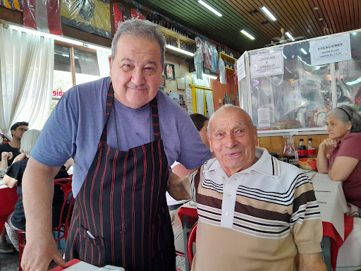
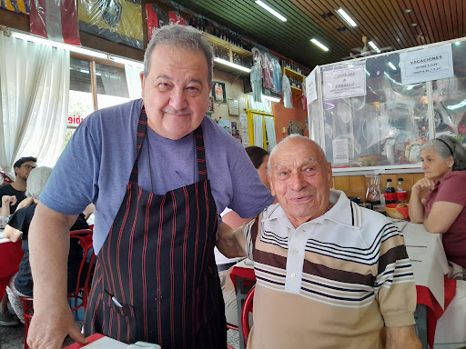

CANTINA CHICHILO DE BUENOS AIRES DESDE HACE 65 AÑOS AL SERVICIO DEL BUEN COMER ATENDIDOS POR SUS DUEÑOS EN UN BARRIO DE FAMOSOS "LA PATERNAL". ADEMÁS LA PRODUCCIÓN DE POLKA LA ELIGIÓ PARA LA APERTURA DE LA NOVELA ILUSIONES Y EL SODERO DE MI VIDA, TAMBIÉN ES EL LUGAR PREFERIDO DE DIEGO MARADONA, Y GANADORA DE LOS PREMIOS CLARIN Y MARTIN FIERRO 2005.
 
